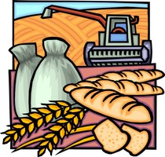

The Oregon "Building Farmers" program builds farm community and farmer capacity through classroom and experiential learning for beginning farmers (farmers who have less than 10 years of farming experience). The programs consist of a series of classes designed to help potential or very new farmers explore farming as a business and to provide intermediate and experienced farmers with tools and ideas necessary to refine and enhance their strategic planning, business management, and direct marketing skills.
Bart Eleveld, Ph.D., Extension Economist
Ballard Extension Hall 213
Corvallis, OR 97331-3601
541-737-1409 | bart.eleveld@oregonstate.edu
Kent Fleming, Ph.D., Extension Economist
541-285-5678 | kent.fleming@oregonstate.edu
Nick Andrews, Metro Small Farms Agent
503-678-1264, x149
nick.andrews@oregonstate.edu
Oregon State University Extension programs are available to all without discrimination.
Began as a regional partnership to build community and capacity among a new generation of direct market farmers and local food systems.
For additional information, contact:Dawn Thilmany McFadden
or
Jo Ann Warner
(509) 477-2168
warnerj@wsu.edu

Initially funded by the USDA Beginning Farmers and Ranchers Development Program (grant award number 2009-49400-05877).